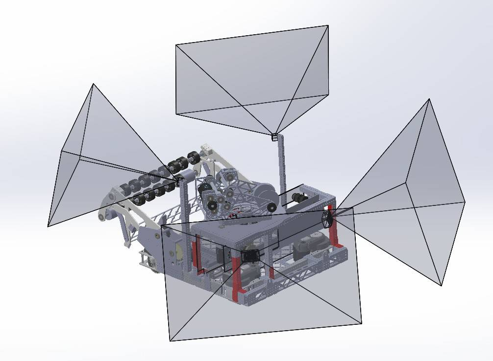
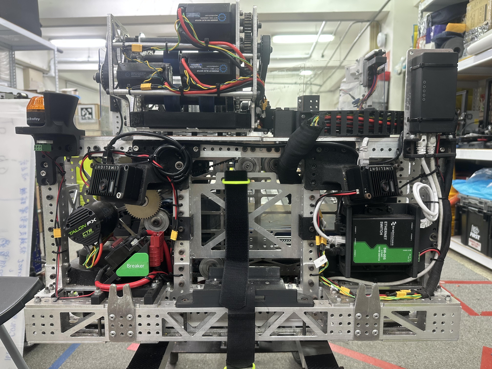
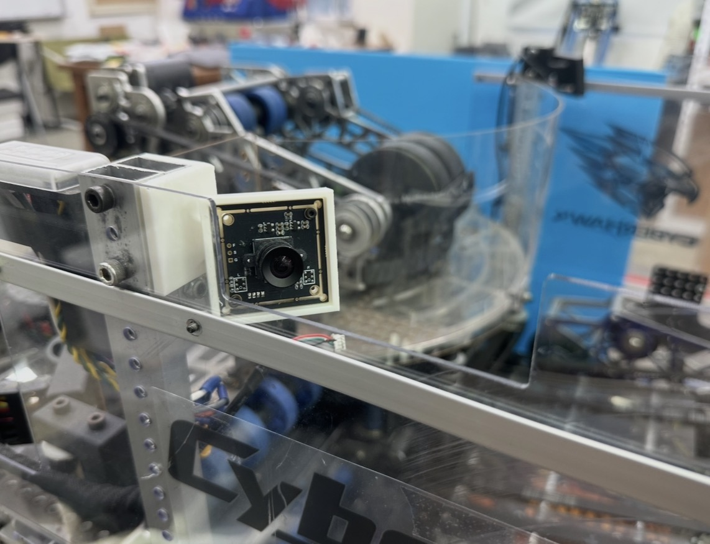
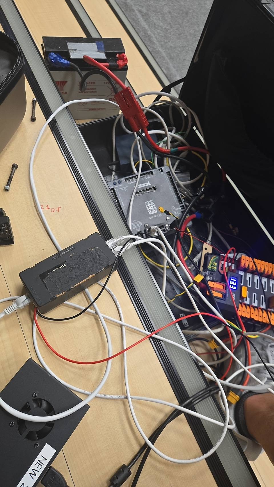

Two Limelights feed vision estimates into a buffer. Two USB cameras send their observations through an Orange Pi before buffering. The buffered vision estimates and robot odometry are combined by a Kalman filter to produce the robot pose estimate.
4 cameras2 Limelights2 USB camerasOrange PiAprilTagsOdometry fusion
SYSTEM OVERVIEW
Multiple observations, one robot pose estimate
The two Limelights feed their vision estimates to a buffer. The two USB cameras feed the Orange Pi, which passes their estimates to a second buffer. Both buffered vision streams and robot odometry enter the final pose estimator.
The two camera pathways are shown separately: Limelight estimates are buffered directly; USB camera observations pass through the Orange Pi before buffering. Robot odometry joins both vision streams at the final Kalman-filter estimate.
CAMERA COVERAGE
Use the CAD field of view to choose camera positions
We compared the cameras’ field-of-view cones in the robot CAD model, then aimed the views toward different parts of the surrounding field with overlap between them. This helped us plan broad coverage while reducing blind spots caused by the robot frame and mechanisms. The CAD view shows the coverage layout used to reason about camera placement; it is a design check, not a claim of a measured or mathematically optimal result.

Camera placement plan · CAD field-of-view regions around the robot.

Robot camera placement · Two Limelight cameras mounted on opposite sides of the robot.

USB camera · The camera module is mounted in the front-facing bracket.
INITIAL TEST SETUP
Early hardware testing
The first setup was still being wired, so callouts identify the components that are visible in the photo.

Initial test setup · Callouts identify the 12 V battery, USB camera, main computer, radio, power distributor, and Orange Pi.
LOCALIZATION PIPELINE
From camera data to a fused estimate
01 / OBSERVE
Collect AprilTag data
The Limelights and USB cameras are parallel inputs; the USB camera stream passes through the Orange Pi.
02 / BUFFER
Handle vision estimates
Limelight estimates are buffered, while USB camera observations pass through the Orange Pi and then a buffer.
03 / FUSE
Estimate robot position
A Kalman filter combines buffered vision estimates with odometry into a robot pose estimate.
ROBOT AND CAMERA TESTING
Inspect detections, then follow the estimated pose
The recordings show the Limelight’s AprilTag output, a 3D-targeting visualization, and the robot’s pose in AdvantageScope. Together they show the development and test views used to inspect the localization system.
Feb 25, 2026 · 3D-targeting dashboard with camera targets and a field visualization.Apr 20, 2026 · Limelight interface showing AprilTag detections and multi-tag pose output.Apr 22, 2026 · AdvantageScope field view with robot pose overlays.